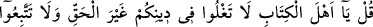
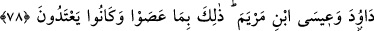
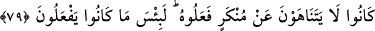
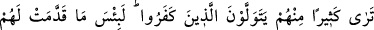
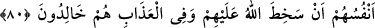
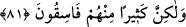

YAHUDİLERİN ÖZELLİKLERİ
77. De ki: Ey Kitap ehli! Dîninizde haksız yere haddi aşmayın. Daha önceden
sapmış, birçoğunu da saptırmış ve doğru yoldan uzaklaşan bir toplumun arzularına
uymayın.
78. İsrâiloğulları’ndan kâfir olanlar, Dâvud ve Meryem oğlu Îsâ diliyle
lânetlenmişlerdir. Bunun sebebi, isyan etmeleri ve sınırı aşmalarıdır.
79. Onlar, işledikleri kötülükten birbirlerini menetmezlerdi. Andolsun yaptıkları
ne kötüdür!
80. Onlardan çoğunun, inkâr edenlerle dostluk ettiklerini görürsün. Gerçekten
nefislerinin kendileri için yapıp gönderdiği ne kötüdür. Allah onlara gazâb etmiştir
ve onlar azap içinde devamlı kalacaklardır!
81. Eğer onlar Allah’a, Peygamber’e ve ona indirilene îman etmiş olsalardı onları
(müşrikleri) dost edinmezlerdi; fakat onların çoğu yoldan çıkmış insanlardır.
“De ki: Ey kitap ehli! Dîninizde haksız yere haddi aşmayın.” Îsâ (a.s.)’ı haketmediği
yere koymayın. Ne hristiyanların yaptığı gibi onu ilah derecesine çıkarın, ne de
yahûdîlerin yaptığı gibi onu gayr-i meşru sayın. “Daha önceden sapmış, bir çoğunu da
saptırmış, doğru yoldan uzaklaşan bir toplumun arzularına uymayın!” Bu toplum, Hz.
Peygamber (s.a.)’in peygamberliğinden önce ehl-i kitabı yoldan çıkaran selefleri ve din
büyükleridir. Onlar sadece kendileri sapıtmakla kalmamış bid’atlarına ve sapıklıklarına
uyanları da sapıtmışlardır. Şaştıkları düz yol ise, gelişinden sonra yalanladıkları, karşı
çıktıkları ve hased ettikleri İslâm’dır.